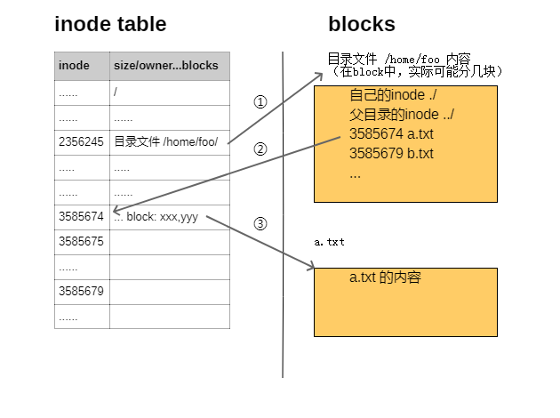

凭记忆复述一个坑，稍微带到 Linux 文件系统知识。时间久远，记忆可能存在差错。发现了错误请留言告知，感激不尽。
标题的中文断句上容易有歧义，重复一下英文：correct way to delete an opened file ，关键在 『打开了的文件』或者叫 『已经打开的文件』，怎么解释都比 opened 拗口。
（由于当时没有留下记录，文中 shell 输出均为写文章时 模拟重现，并非第一现场。）
结论
惯例开头给结论
- 有进程引用 的文件在当下无法真正被删除，虽然 rm 之后 ls 等命令无法再看到文件，但是磁盘空间依然没有被释放，在 rm 之前就已经打开文件的进程 依然可以正常读写这个文件。
- 所以删除一个正在打开（rwx 都算）的文件，对打开的进程来说是安全的，并不会造成进程崩溃。这也是程序可以运行时更新的原因。rm 之后这个文件名（指包括路径在内的全名）被释放，可以新建同名文件，也可以把其他文件 mv、cp 过来，这时想办法重启进程，引用的就已经是新文件了。但注意，文件更新之后、进程重启之前，进程仍在 引用（已经看不见的）旧文件。
- 具体看删除的目的是什么：
- 只是要删除文件，不关心磁盘空间什么时候释放 ，直接 rm 即可，磁盘将在文件不再被引用之后释放。
- 只是为了释放磁盘空间，不关心这个文件名的释放，直接
echo > filename或者cat /dev/null > filename清空内容是更有效的办法。
- 如果像我一样，没想清楚就 rm 了，而磁盘还没释放，先 通过 lsof 找到打开的进程号 ，有两种方法可以释放：
- 进程可以重启，那就 重启进程 ，释放文件句柄
- 进程不能重启，就在进程下找到被删除的文件的符号链接，通过这里把文件清空。（详细操作看正文）
经过
还是去年 6 月的事，当时给熟人介绍的公司当远程技术顾问，帮他们实现一个服务。
考虑到远程调试的各种不便，服务用 go 实现，各种 feature 尽量做成了内置，同时预留了对接成熟组件的余地。例如数据库默认 sqlite3，但修改配置可以连接 MySQL。通过这样做到单文件部署即可测试，减少合作中的远程部署和沟通成本。（这段其实跟本文主旨无关，但是忍不住提一下 go）
不涉及数据的测试，项目组每个人在自己的电脑就能部署自测；涉及数据部分或者比较正式的测试、演示，甲方给了一个阿里云的服务器，服务部署在上面，然后大家一起测试，确保大家测试的是同一份配置，同一份数据。
这是背景。
0x0 磁盘爆满
某天晚上，如常根据甲方反馈意见做了修改，部署，测试。
结果刚上线大家就反馈说，服务非常卡，完全没法用。
就这么几个人访问，不大可能有性能问题，根据以往经验，看了一下网络延时，正常。再去看日志，数据库一堆错误。这样顺藤摸瓜，最后得出结论 —— 服务器磁盘满了 ……居然满了！！？（当时内心小声嘀咕，贵司没有任何运维措施的吗？服务器上没有监控和告警的吗？）
询问甲方后，得知这是甲方一个即将到期的服务器，不打算续期，重要的服务都已经迁移到新的服务器。（不管好像也说得过去。）
浏览了一下磁盘，找到了几个比较大的文件，挑了最大的一个 nohup.out 去征求甲方意见，果然可以删。（不知道『 nohup.out 是什么，为什么大概率可以删』的童鞋，请自行了解，不展开。）
没细想，直接 rm 了。
0x1 依然爆满
重新启动服务，测试，依然超卡。看日志，问题依旧。去看删掉的文件，不在。检查磁盘空间，依然是满的 ……居然还是满的？！删了好几G东西，这么快又写满了？不可能啊。
然后有几秒陷入了沉思……（此处应有黑人问号脸）
（这里吐槽一下自己，明明前几天磁盘还有空间，今天突然就满了，数据写入的速度明显不是我写的服务能够造成的，下面的事情我就应该想得到，rm 前就应该 lsof 一下。）
还好，我很快反应过来是什么回事。
因为甲方说服务已经迁走了，想当然地认为这个服务器已经没有在跑什么应用，各种数据文件也应该是历史遗留。只是想当然，没有查进程，没有查文件的访问时间、修改时间。
现在的现象提醒我，文件应该是被进程打开了。
（如果在 rm 之前 lsof 一下，输出大概是这样。lsof 是 LiSt Open Files 的缩写。可惜当时没有先做这步。）
（再次提醒，以下 shell 输出是写文章时 写代码循环 print 模拟的 ，真实情况当时没有保留。）
|
|
（从这个结果看，nohup.out 被 dummy 进程打开了。fd 部分 1 是标准输出，2 是标准错误，w 是只写打开。这里因为只有一个 nohup.out 被引用，所以 grep 直接以 nohup.out 为条件；实际上当时服务器上不止一个 nohup.out，所以用了更复杂的条件。但是这个没有模拟的必要，如果筛选出来的结果太多，再实时调整 grep 的搜索条件就好了。）
实际上当时直接就 rm 了。
|
|
rm 之后才反应过来，然后徒劳地用 重定向清空 挣扎了一下。
|
|
新建的 nohup.out 是空白的（如果是 echo > nohup.out 则有一个字节），但是磁盘依旧没有释放。留意 inode 已经不是同一个文件了。最后还是不得不 lsof。
|
|
可以看到，跟上面相比有两个变化：
- 文件名后面多了
(deleted)，表明文件已经被（标记）删除。 - SIZE 变大了（因为进程还在持续写入），反正不是新建的文件大小。
0x2 找回文件句柄
这时进入了一个尴尬的境地：想删文件，结果被进程占用，只是标记删除，磁盘空间没释放；想清空文件大小，但是因为文件（实际上是文件的硬链接）已经被删除了，没有了操作的对象。现在任何对该目录下的 nohup.out 的操作，都指向了新文件。
这时只好请出 /proc 。
/proc 是只存在于内存里的伪文件系统，通过文件的方式，提供访问内核和进程信息的接口。（Linux 一切皆文件）在上面，我们已经知道了 dummy 的进程号是 29627，那么我们就可以通过以下方式查找到它打开的文件：
|
|
注意这里的文件只是符号链接，所以大小都是 64，并非指向的文件的真实大小。
这些符号链接非常特殊，他们指向 原文件名+空格(deleted) （这个通过 readlink /proc/29627/fd/1 可以看到）， (deleted) 并非一个注释，而是实在的目标文件名的一部分。拿这个名字（中间有空格，所以要引号括起来）去访问，无论 ls、cat、stat 都访问不了（没有那个文件或目录）；而且这个名字可以创建新文件，inode 是新的。但是对符号链接重定向却起效了。估计内存引用做了特殊处理，只是我查了半天没有找到具体是什么处理，先把这个题外话搁下，不影响本文的主要内容。
0x3 清空
拿到了文件的句柄，就可以清空内容了。
|
|
这时再看
|
|
文件大小就小很多了。为什么不是 0 呢？因为进程还在写入。[苦笑]
所以不用多久，很可能还是要再处理一次。如果确认进程已经没有用，还是停掉吧。
|
|
涉及的文件系统原理
上面的内容要透彻理解，涉及到 Linux 的文件系统原理。直接上一张图

- 首先目录本身也是文件，只是系统做了特殊处理。里面的内容非常简单，所有子文件的 文件名 以及对应的 inode 号，也就是
ls -i输出的内容。 - inode 储存 文件名 和 文件内容 以外 的所有信息（大小 / 所有者 / 分组 / 权限 / 时间戳 / 链接数 / 块的位置，基本上等于
stat输出的内容）。访问文件时，根据文件名获取到对应的 inode，再从 inode 获取各个块的位置，从块里读取 内容。 - 访问一个文件，就是从根目录
/的 inode 开始不断做 3 个操作： ① 读目录文件；② 找到对应的 inode； ③ 从对应的块读取内容。如果 ③ 读到的是一个目录文件，继续递归下去，直到读到目标文件为止。 - inode 里储存了 引用计数（内存） 和 链接计数（磁盘）。只有两者都为 0 ，inode 才会被回收。而只有 inode 被回收，块才会被回收。
- 硬链接(hard link) 本质上是所有指向 inode 的文件名，记录在 目录文件 里，包括创建时第一个文件名。rm 本质是 unlink，删掉目录文件里的记录；每删除一个，链接计数 减 1。创建硬链接，就是在目标目录里加一条新记录，指向同一个 inode，链接计数 加 1。而在同一个文件系统里移动文件(mv)，等于在新旧目录分别做以上操作。
- 进程打开文件，则会增加 引用计数，并且在
/proc中通过符号链接记录指向的文件。一旦完成了靠 文件名 查找 inode 的过程，在关闭重新打开之前，会直接访问 inode 。此时只针对文件名的操作，都不会影响进程访问文件。
拿可能更多人了解的互联网打个不太准确的比方：
- 文件名 相当于 域名，inode 相当于 IP，块相当于服务器。
- 硬链接相当于 A 记录，软链接相当于 CNAME 记录。不过软链接的类比不准确，因为软链接 不是在目录里直接指向目标文件的 ，而是本身是一个普通文件，有 inode，有块；只是块里记录的是目标文件；相当于还是 A 记录，有 IP，有服务器，只不过服务器唯一的作用就是重定向到另一个域名。
- 访问文件时查询 inode 相当于 DNS 查询，一旦完成了，直接按 IP 通信。在断开重连之前，域名的修改不影响通信。
大概是这样，继续深入还能写好长，篇幅所限先打住。
有些知识点我不是特别确定，所以行文期间参考了以下文章，如果想进一步了解，建议也看一下：

本文为本人原创，采用知识共享 “署名-非商业性使用-相同方式共享” 4.0 (CC BY-NC-SA 4.0)”许可协议进行许可。
本作品可自由复制、传播及基于本作品进行演绎创作。如有以上需要，请留言告知，在文章开头明显位置加上署名（Jayce Chant）、原链接及许可协议信息，并明确指出修改（如有），不得用于商业用途。谢谢合作。
请点击查看协议的中文摘要。